Kernel cases
Every case of the kernel corpus's areas that have renders, with its render, what it is and its
status: 275 pass, 21 are refused as they expect, 15 are known failing
(311 in all). Generated from the entries in
crates/solidcore/tests/kernel_cases/
and known_failing.json:
a case on that list is known failing, with its reason; a case whose expected.outcome is
refused is refused as expected; any other case passes. A render is
<area>/<case>.jpg beside the case; a refused or stopped case shows the part as it was before
the operation.
fillets
275 cases from crates/solidcore/tests/kernel_cases/fillets/.
| Render | Case | Status |
|---|---|---|
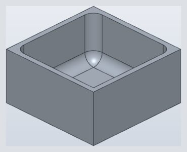 | 1008-fillet-tray-floor-and-three-of-four-cornersan R10 round on the four inside floor edges and three of the four inside vertical corners of an open tray, so one corner keeps a sharp vertical edge where two floor rounds meet (rebuilt from the report's edge picks: the original design is not in the report) | passes |
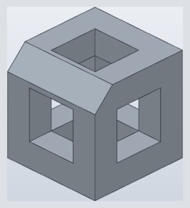 | 1080-chamfer-beside-openings-fitsa 4 mm chamfer on the top front edge of a cube with three square openings stays clear of the openings (they start 5 mm in) | passes |
1080-chamfer-equal-slope-basin-1-mm-rim-loop-0-5all four top rim edges of a basin whose walls all slope 10 over 20, its front rim 1 mm wide, chamfered 0.5, mitred at the rim's corners | passes | |
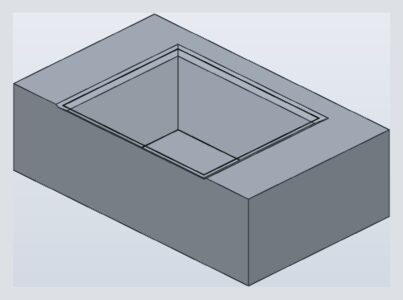 | 1080-chamfer-equal-slope-basin-1-mm-rim-loop-2all four top rim edges of a basin whose walls all slope 10 over 20, its front rim 1 mm wide, chamfered 2: the front chamfer's leg runs off the rim over the slab's front face (a cliff), so the loop builds as if the top went on, mitred at the rim's corners, and is cut by the front face | passes |
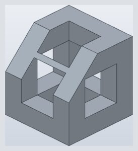 | 1080-chamfer-runs-into-openings-cut-by-thema 9 mm chamfer on the top front edge of a cube with square openings 5 mm in runs past the 5 mm between the edge and the openings: built as if the faces went on over the openings, then cut by them (cliff overflow); it never bridges an opening | passes |
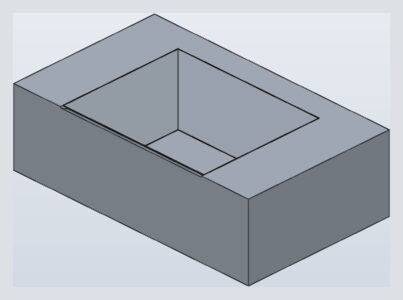 | 1080-chamfer-sloped-basin-1-mm-rim-2-past-the-rimthe 1 mm front rim of a sloped basin's top chamfered 2: its leg on the top runs off the rim over the slab's front face (a cliff), so it builds as if the top went on and is cut by the front face, which it lowers to z = 29.570689 where it crosses it | passes |
1080-chamfer-sloped-basin-1-mm-rim-as-wide-as-the-rimthe 1 mm front rim of a sloped basin's top chamfered 1, as wide as the rim: its leg on the top ends on the slab's front edge, using the rim's top up, and it builds | passes | |
1080-chamfer-sloped-basin-1-mm-rim-half-its-widththe 1 mm front rim of a sloped basin's top chamfered 0.5, half the rim's width: it fits | passes | |
1080-fillet-equal-slope-basin-1-mm-rim-loop-0-5all four top rim edges of a basin whose walls all slope 10 over 20, its front rim 1 mm wide, rounded R 0.5, mitred at the rim's corners | passes | |
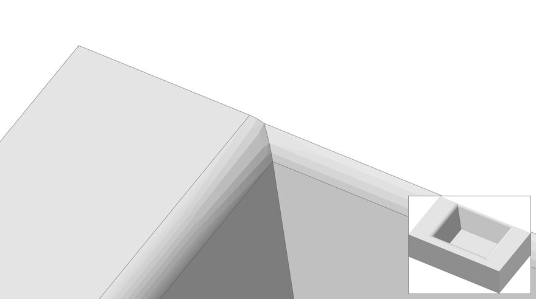 | 1080-fillet-equal-slope-basin-1-mm-rim-loop-4all four top rim edges of a basin whose walls all slope 10 over 20, its front rim 1 mm wide, rounded R 4, mitred at the rim's corners: past the rim the front round runs over the slab's front face and is cut from the slab builds to the analytic volume (rel 5e-9); the mitres' creases are G0 by the mitre ruling, so the continuity check names the rounds' contact lines | passes |
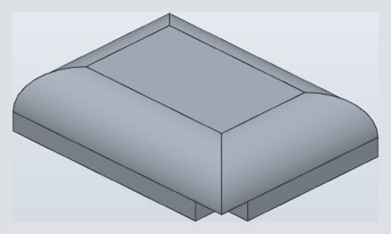 | 1080-fillet-notched-block-top-outline-r7a 40 x 30 x 10 block with a 5 x 5 x 3 notch at a bottom corner, its top outline rounded R7: the round uses up the 7 mm wall over the notch | passes |
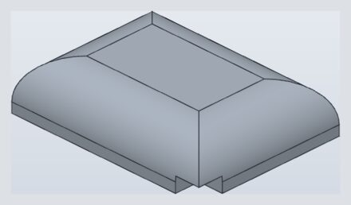 | 1080-fillet-notched-block-top-outline-r8a 40 x 30 x 10 block with a 5 x 5 x 3 notch at a bottom corner, its top outline rounded R8: the round runs past the 7 mm wall over the notch into the notch and is cut by it | passes |
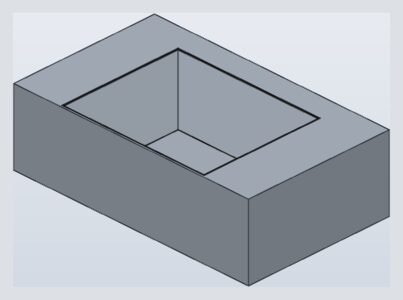 | 1080-fillet-sloped-basin-1-mm-rim-r0-5-4-edgesall four of the top rim edges of a sloped basin with a 1 mm front rim rounded R0.5, mitred at the rim's corners | passes |
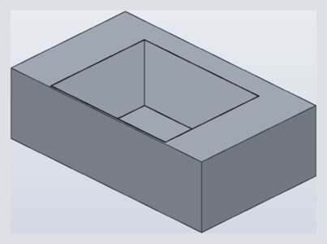 | 1080-fillet-sloped-basin-1-mm-rim-r0-5the 1 mm front rim of a sloped basin's top rounded R0.5: it fits on the rim | passes |
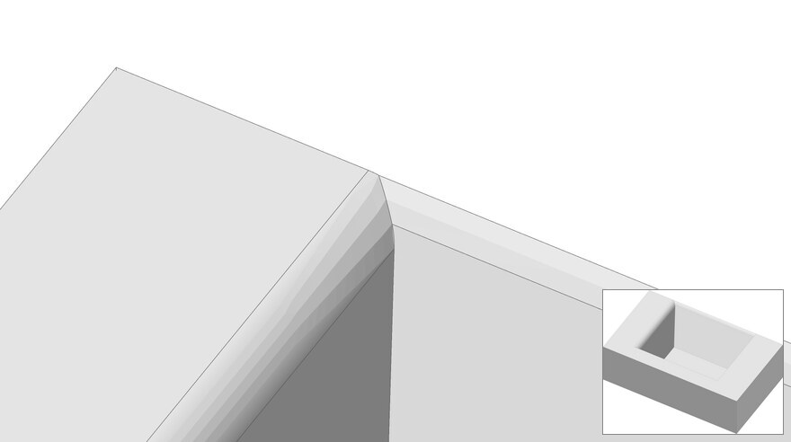 | 1080-fillet-sloped-basin-1-mm-rim-r4-2-edgesthe front and right of the top rim edges of a sloped basin with a 1 mm front rim rounded R4, mitred at the rim's corners: past the thin rim the front round runs over the slab's front face and is cut from the slab builds to the analytic volume (rel 6e-9); the mitres' creases are G0 by the mitre ruling, so the continuity check names the rounds' contact lines | passes |
1080-fillet-sloped-basin-1-mm-rim-r4-4-edgesall four of the top rim edges of a sloped basin with a 1 mm front rim rounded R4, mitred at the rim's corners: past the thin rim the front round runs over the slab's front face and is cut from the slab builds to the analytic volume (rel 3e-9); the mitres' creases are G0 by the mitre ruling, so the continuity check names the rounds' contact lines | passes | |
1080-fillet-sloped-basin-1-mm-rim-r4the 1 mm front rim of a sloped basin's top rounded R4: the round runs over the rim's top past the slab's front face (a cliff) and is cut from the slab | passes | |
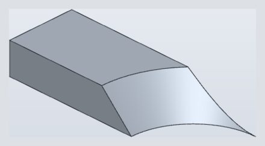 | 1113-chamfer-arc-top-edge-full-wall-heightthe top edge of #851's concave R21 wall chamfered 10, the wall's full height: its leg down the wall ends on the wall's bottom edge, using the wall up, and it builds | passes |
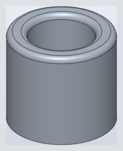 | 1191-fillet-both-rims-of-a-tube-topan R2 round on the outer and inner rim circles of a tube's top face (the report's ten picks on a ring-shaped top: the round failed after 0.10.1; rebuilt as a plain tube since the design is not in the report) | passes |
| no render | 11991-chamfer-cylinder-edge-ending-on-a-round-tangent-linethe chamfer twin of 11991-round-cylinder-edge-ending-on-a-round-tangent-line: a box 30 x 20 x 20 with its vertical edge at x = y = 0 rounded R5, joined with a half cylinder r2 along x (axis y = 0, z = 15, x 5..11) standing out of the front face y = 0; the cylinder's end x = 5 lies exactly on the line where the front face runs tangent into the R5 round. A 0.5 chamfer on the concave edge where the cylinder meets the front face (z = 13). Failed on 0.40.0-rc.2 with SMLib status 1001; builds on rc.3. | passes |
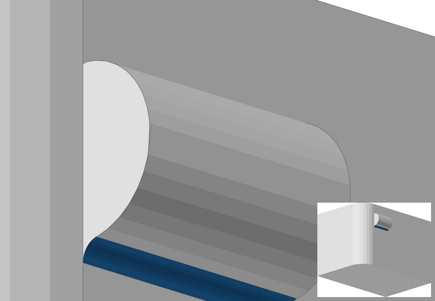 | 11991-round-cylinder-edge-ending-on-a-round-tangent-linea box 30 x 20 x 20 with its vertical edge at x = y = 0 rounded R5, joined with a half cylinder r2 along x (axis y = 0, z = 15, x 5..11) standing out of the front face y = 0; the cylinder's end x = 5 lies exactly on the line where the front face runs tangent into the R5 round. The concave edge where the cylinder meets the front face (z = 13) rounded 0.5 must give one closed solid, as it does at x = 5.001 or 6 the half cylinder's end sits on the line where the front face runs into the R5 round; the round of its foot runs the full 6 and ends on the end disc's plane, whose patch closes it against the R5 round | passes |
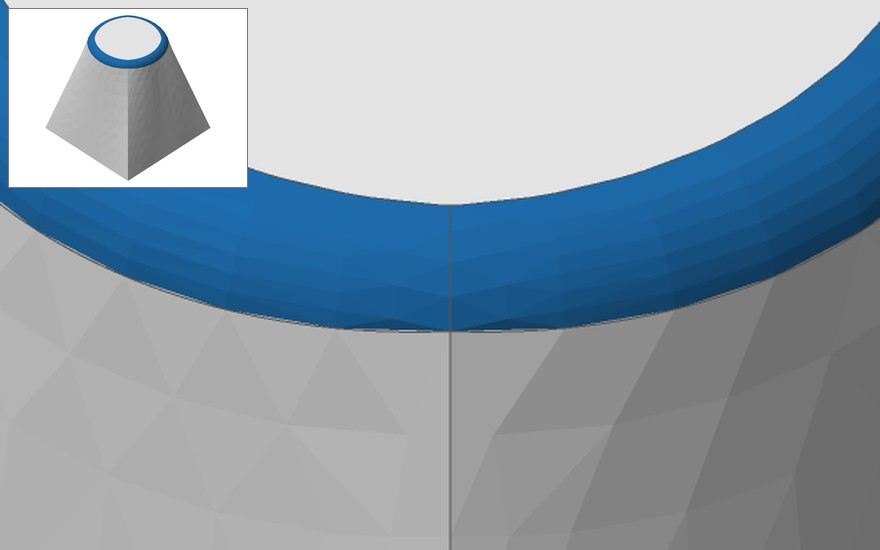 | 12034-round-loft-square-to-circle-circular-rima ruled loft (degree 1) from the square of side 30 at z = 0 (four lines) to the circle r10 at z = 30 (four quarter arcs centred on the square's sides' directions): six faces, the top a plane disc. Its circular top rim, the four arcs as one tangent chain, rounded R2 must give one closed solid the top disc's rim (highlighted) rounded R2: at each joint of its arcs the loft's side edge stands between the walls, tangent to them only at the joint, so the two rounds turn there, mitred on their crossing | passes |
1207-fillet-bar-top-edge-after-boss-arc-round-partial-chainafter the boss's partial base arc is rounded r2, the bar's top edge that runs into the round rounded r2 without its tangent chain | passes | |
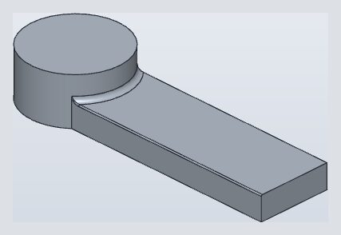 | 1207-fillet-bar-top-edge-after-boss-arc-round-r0-5after the boss's partial base arc is rounded r2, the bar's top edge that runs into the round rounded r0.5 | passes |
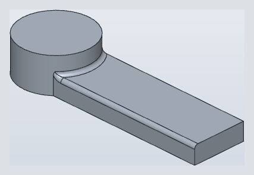 | 1207-fillet-bar-top-edge-after-boss-arc-roundafter the boss's partial base arc is rounded r2, the bar's top edge that runs into the round rounded r2 | passes |
1207-fillet-bar-top-edge-and-boss-arc-togetherthe bar's top edge and the partial base arc of a boss standing out over the bar's side, rounded r2 together: the corner patch where they meet must join the bar's round at least G1 (today a 15.6° crease) | passes | |
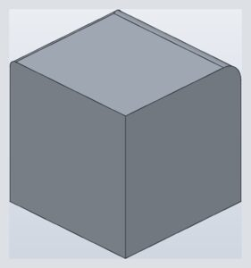 | 1207-fillet-box-end-edge-into-unblended-round-partial-chainan edge that runs on tangentially into a round left out of the blend (tangent chain off) is rounded on past the round's end arc until it leaves the material | passes |
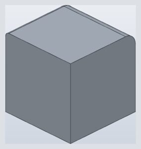 | 1207-fillet-box-end-edge-into-unblended-roundan edge that runs on tangentially into a round's end arc, its tangent chain rounded with it: the r1 round follows the end face's outline over the r3 round and down the back edge | passes |
 | 1207-fillet-concave-arc-at-bossan R2 round on the concave arc where a bar top meets a boss that only partly sits on it | passes |
1207-fillet-straight-edge-ending-on-bossan R2 round along the straight top edge of a bar that runs out against a cylindrical boss | passes | |
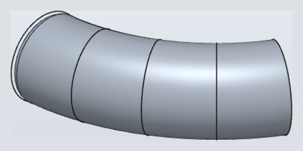 | 1213-round-end-circle-of-bent-tubean R3 round on the end circle of a lofted tube whose axis bends 60 degrees the tube's bent axis is a 60 degree torus section | passes |
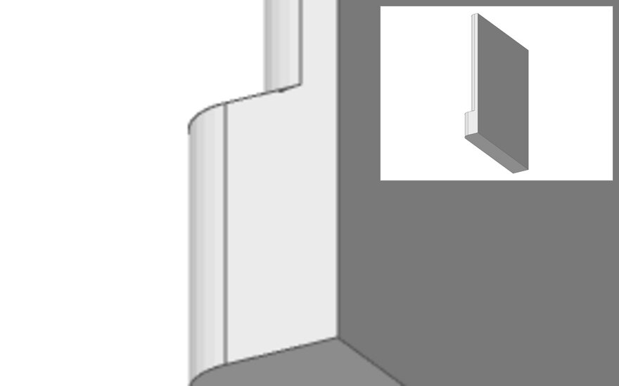 | 12342-round-wall-and-ledge-edges-r2-5an L body: a 4 mm wall (x 16..20, y -20..20, z -40..2) on a 7 mm base (x 16..23, z -50..-40), so the base stands 3 mm proud of the wall as a ledge at z = -40; the wall's outer vertical edge at x = 20, y = 20 and the ledge's at x = 23, y = 20, both convex edges between the back face y = 20 and the faces x = 20 and x = 23. Both edges rounded R2.5, a size that fits each: one closed solid (R3 the same), as each edge alone builds R2.5 fits each edge alone and the two together: the rounds end apart on the stepped back face | passes |
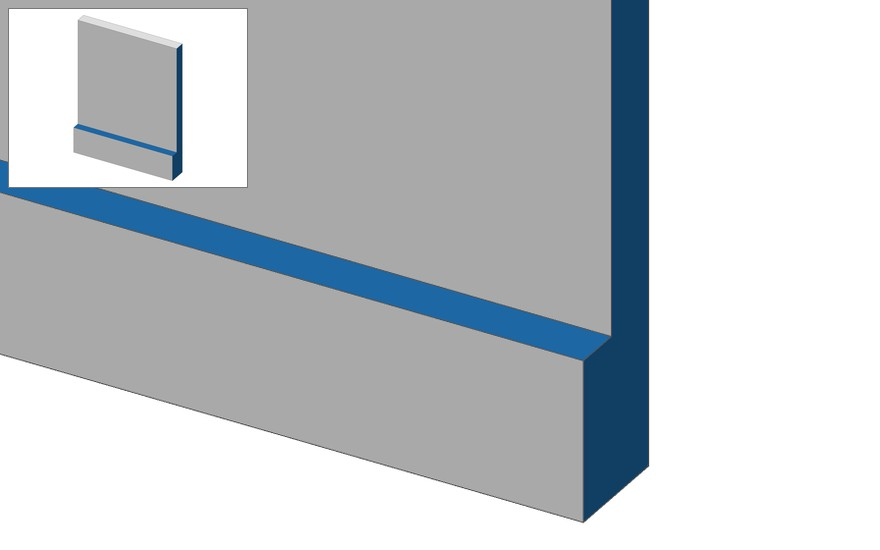 | 12342-round-wall-and-ledge-edges-r5-refusedan L body: a 4 mm wall (x 16..20, y -20..20, z -40..2) on a 7 mm base (x 16..23, z -50..-40), so the base stands 3 mm proud of the wall as a ledge at z = -40; the wall's outer vertical edge at x = 20, y = 20 and the ledge's at x = 23, y = 20, both convex edges between the back face y = 20 and the faces x = 20 and x = 23. Both edges rounded R5 (solidcraft#12342, case 2): past the 3 mm ledge and the 4 mm wall, so it must be refused naming the largest radius that fits, 3; it fails with status 1001. Each edge alone is refused (the ledge naming 3) or builds up to its fit, and the pair at R3.5 or R4 is refused naming 3 the back face y = 20 and the 3 mm ledge top highlighted: both vertical edges at R5 should be refused naming 3, and fail with status 1001 | known failing status 1001 instead of the refusal naming the size that fits (solidcore#2845) |
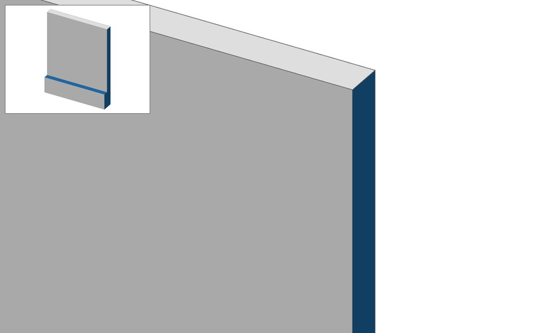 | 12342-round-wall-edge-r5-past-the-wall-refusedan L body: a 4 mm wall (x 16..20, y -20..20, z -40..2) on a 7 mm base (x 16..23, z -50..-40), so the base stands 3 mm proud of the wall as a ledge at z = -40; the wall's outer vertical edge at x = 20, y = 20 and the ledge's at x = 23, y = 20, both convex edges between the back face y = 20 and the faces x = 20 and x = 23. The wall's edge alone rounded R5, past the wall's 4 mm: refused naming the largest radius that fits, 4; it fails with status 1001 (R4.5 the same, R4 builds 9520 - (1 - pi/4) 16 * 42) the back face y = 20 highlighted, 4 mm wide beside the wall: the wall's edge at R5 should be refused naming 4, and fails with status 1001 | known failing status 1001 instead of the refusal naming the size that fits (solidcore#2845) |
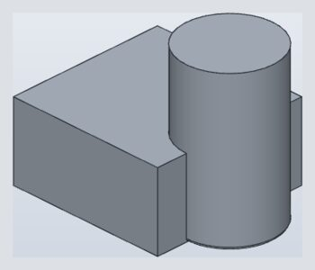 | 1262-fillet-boss-bottom-arca 0.8 mm round on the exposed half circle at the bottom of a cylindrical boss joined to a box side | passes |
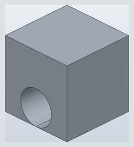 | 1390-chamfer-hole-rim-touching-bottoma 3 mm chamfer on the rim of a hole tangent to the bottom face runs off that face: refused, today because SMLib's blends have no corner of the kind where the rim meets the bottom tangentially (never material added below the part) | refused as expected the refusal names “meets a corner of this kind” |
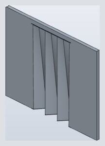 | 1488-fillet-slab-end-after-nudged-loft-joinan R1 fillet on the end edge of a 3.5 mm slab after a pleated loft was joined flush with its inner face (the join needs a tool retry; later fillets must still work) | passes |
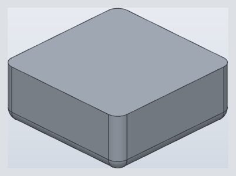 | 1557-fillet-vertical-corners-after-bottom-roundsvertical corner fillets R2 on a 25x25x10 box whose four bottom edges are already rounded R2 (the round meets the earlier mitre) | passes |
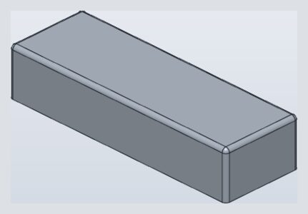 | 1667-fillet-rim-line-beside-quarter-turnsan R5 round of the top rim of a 297 mm long box whose corners are R5 (a 287 mm line beside 7.85 mm quarter turns) | passes |
1668-fillet-both-sides-of-thin-wall-r7R7 rounds of the outer top edge and the inside edge of a 2 mm wall in one fillet: the inside round holds the material the outer one runs over, so the wall stays closed | passes | |
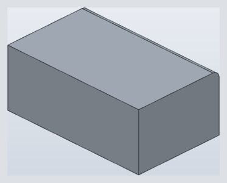 | 1668-fillet-both-sides-of-thin-wallan R5 round on an outer top edge and the matching inner (concave) edge of a 2 mm wall in one feature fits, as it does one after the other | passes |
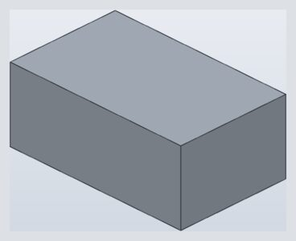 | 1668-fillet-outer-top-edge-of-thin-wall-r7-past-inside-corneran R7 round of the outer top edge of a 2 mm wall alone: past the sharp inside corner it would cut through the wall into the hollow, opening a slit along it, so it is refused, naming the largest radius that fits | refused as expected the refusal names “the largest radius that fits is 6.828 mm” |
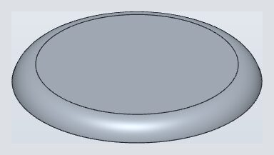 | 190-fillet-disc-rim-past-its-2mm-wallan R2.5 round of the top rim of a disc R13 x 2: the round runs past the bottom of its 2 mm wall (a cliff) and is built as if the wall went on, cut by the bottom face | passes |
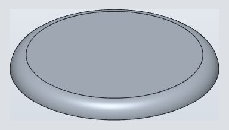 | 190-fillet-rim-as-tall-as-wallan R2 round of the top edge of a disc 2 mm high (the round is as tall as the wall, so it meets the bottom face) | passes |
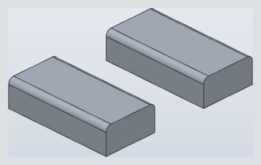 | 193-paste-copies-the-filletsa block with two R2 top edges rounded, copied and pasted 40 mm over: the copy must carry its own fillets | passes |
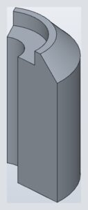 | 1986-chamfer-arc-edge-of-joined-sectorsa 3 mm chamfer on the outer top arc of a 120 degree annular sector joined to a lower inner sector (the joined outer wall must not limit the chamfer) | passes |
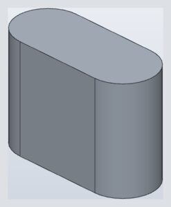 | 199-fillet-uses-up-end-facean R3 round on the four vertical edges of a 14x6x10 box: the two rounds on each 6 mm end face meet exactly (the face is used up) | passes |
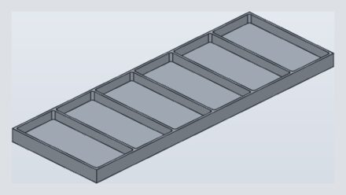 | 219-pattern-of-filleted-pocketsa plate with 6 pockets made by patterning one pocket and the R3.2 round of its four corner edges, the pocket height set by a parameter | passes |
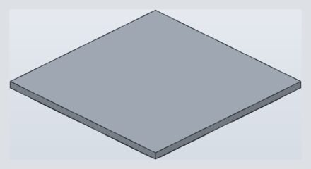 | 2341-pattern-of-chamfered-bossesa 2 x 2 grid made by a feature pattern of a boss and its two chamfers (a concave root chamfer and a convex tip chamfer) | passes |
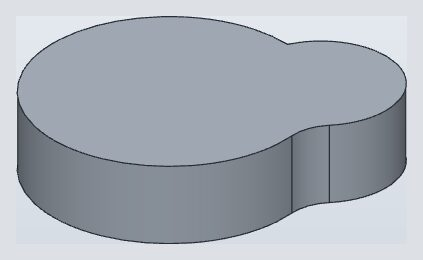 | 237-fillet-concave-edge-between-two-cylindersan R6 round on the vertical edge where two cylinder walls meet (the concave corner of two merged discs), the two walls meeting at an angle | passes |
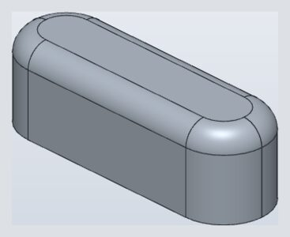 | 2498-fillet-tiny-end-edges-rounded-rectanglean R2 round of the top loop of a 26.4x8.6x8.4 rounded rectangle whose end edges are only 0.02 mm long (corner radius 4.29) | passes |
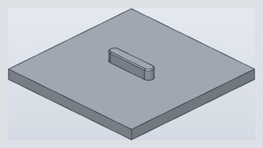 | 2672-chamfer-one-pick-large-plateone pick on a stadium boss top rim chamfers the whole tangent loop, also when the part is more than 200 mm across | passes |
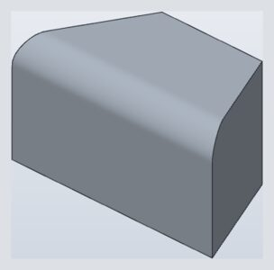 | 2708-fillet-curvature-continuous-angled-endsa curvature-continuous (G2) fillet of size 5 on a straight edge that ends on two slanted planar faces | passes |
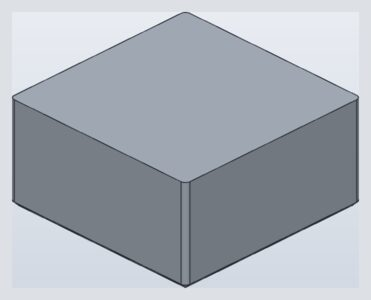 | 2719-chamfer-as-wide-as-corner-rounda 1 mm chamfer round a bottom loop whose corners are R1 rounds: each corner cone closes to a point on the bottom face | passes |
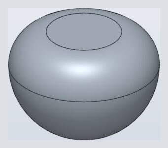 | 2752-fillet-rim-of-flat-cut-on-spherean R1 round round the rim of a radius-2 sphere cut flat at z=1 | passes |
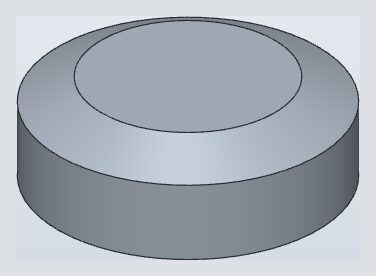 | 2797-chamfer-two-distances-circular-rima Two Distances chamfer (1 mm on the top face, 0.5 mm down the wall) on the circular rim between a plane and a cylinder | passes |
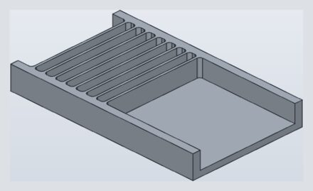 | 2811-fillet-rib-rootsan R1.5 fillet of the 32 vertical root edges of 8 ribs between two walls of a grille tray (a performance case: the time must not blow up) | passes |
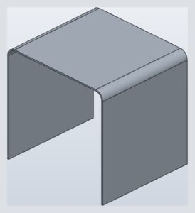 | 2852-fillet-outer-round-concentric-with-inneran R18 round on the outside top edges of a 3 mm thick upside-down U, concentric with the R15 round of its inside edges | passes |
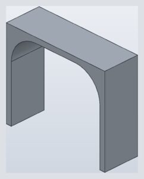 | 2852-fillet-outer-round-r30-past-inner-round-refuseda 3 mm U shell (60 x 20 x 50) whose inside top edges are rounded R15: its outside edges rounded R30 would cross into the hollow and cut the top plate off the walls, so it is refused, naming the largest radius that fits | refused as expected the refusal names “the largest radius that fits is 25.2” |
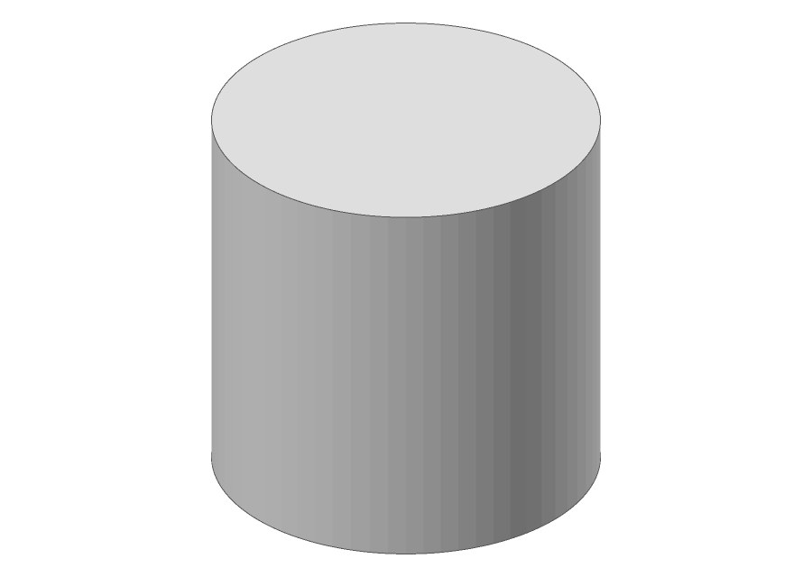 | 2893-chamfer-distance-and-angle-past-the-wall-refusedthe top rim of a cylinder r10 x 20 chamfered 2 across the top at 90.573 deg from it: refused at 90.573 degrees from the top the chamfer's line runs out through the wall: it meets the wall only below 90 degrees, pi less the wedge. The kernel refuses with the angle and that bound (BlendRefusal::ChamferAngleTooLarge). The picture is the operand the refusal leaves; the chamfer would run round its top rim. | refused as expected the refusal names “angle” |
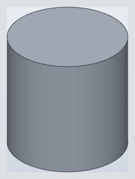 | 2893-chamfer-two-distances-across-the-whole-top-refusedthe top rim of a cylinder r10 x 20 chamfered 10 across the top and 3 down the wall: refused | refused as expected the refusal names “larger than” |
2893-chamfer-two-distances-elliptical-rima cylinder r5 tilted 26.6 deg from Z cut flat at z = 10, its elliptical rim chamfered 1 and 2: one closed valid solid the rim's two arcs are one chamfer, one pair of offsets measured at 86.4 deg, the narrowest wedge at which no station folds, so the sizes 1 and 2 hold only there: the wedge runs 63.4 to 116.6 deg round the rim, and the setbacks run 0.01 to 1.95 along the top and 1.73 to 2.61 down the wall, the chamfer all but gone on the top at the far tip. Setbacks that hold at every station are another definition (a follow-up) | passes | |
2893-chamfer-two-distances-past-the-bottomthe top rim of a cylinder r10 x 20 chamfered 2 across the top and 25 down a 20 mm wall: the leg down the wall runs 5 past the bottom rim, so it builds as if the wall went on and is cut by the bottom face, a cone frustum | passes | |
 | 2893-chamfer-two-distances-past-the-top-refusedthe top rim of a cylinder r10 x 20 chamfered 12 across the top and 3 down the wall: refused | refused as expected the refusal names “larger than” |
2903-edited-rim-chamfercentered70x50 extrusion at edited height33, four outer vertical R6 rounds before top-open inward shell2 (inner cornerR4), from typical/filleted-shelled-box; original height30 changes to33 while matrix blend size stays0.627; blend the complete eight-edge inner top rim from the first reported mirror, explicitly in the reproduced chain order. Direct original Body.record() JSON captured from public SolidCraft kernel APIs at application PR #12413 head 2e8847512baf43c91ab4e2c407750d6f896b6053 with solidcore9856ffee5. This is the geometry after rebuilding height33, not an engine timeline/reference-resolution replay and not an SMB re-export. V0=(70*50-4*A*6^2)*33-(66*46-4*A*4^2)*31, L=192+8*pi. There is no floor round. A=1-pi/4 and M=5/6-pi/4 are the unit round section area and first moment. Outward parallel contours have Jacobian1+kappa*u and total turning2*pi. For the top inner chamfer, subtract L*d^2/2+pi*d^3/3 (triangle area d^2/2 and moment d^3/6), at size0.627. Eight new strip faces, sixteen extra edges and eight extra vertices give counts(27, 64, 40); the existing annular top face remains annular. The whole inner top rim builds from the formerly refused corner. Projecting to another corner endpoint no longer reports a distant rail as overlapping its blend band. | passes | |
2903-edited-rim-roundcentered70x50 extrusion at edited height33, four outer vertical R6 rounds before top-open inward shell2 (inner cornerR4), from typical/filleted-shelled-box; original height30 changes to33 while matrix blend size stays0.627; blend the complete eight-edge inner top rim from the first reported mirror, explicitly in the reproduced chain order. Direct original Body.record() JSON captured from public SolidCraft kernel APIs at application PR #12413 head 2e8847512baf43c91ab4e2c407750d6f896b6053 with solidcore9856ffee5. This is the geometry after rebuilding height33, not an engine timeline/reference-resolution replay and not an SMB re-export. V0=(70*50-4*A*6^2)*33-(66*46-4*A*4^2)*31, L=192+8*pi. There is no floor round. A=1-pi/4 and M=5/6-pi/4 are the unit round section area and first moment. Outward parallel contours have Jacobian1+kappa*u and total turning2*pi. For the top inner round, subtract L*A*r^2+2*pi*M*r^3, at size0.627. Eight new strip faces, sixteen extra edges and eight extra vertices give counts(27, 64, 40); the existing annular top face remains annular. The whole inner top rim builds from the formerly refused corner. Projecting to another corner endpoint no longer reports a distant rail as overlapping its blend band. | passes | |
2903-original-rim-chamfer60x40x30 extrusion, top-open inward shell3, four outer vertical R6 rounds, four inner vertical R3 rounds, inner floor tangent-chain R1; blend the complete eight-edge inner top rim from the first reported mirror, explicitly in the reproduced chain order. Record re-exported through solidcraft_smlib::Brep::read(seed0-input.smb,true).to_native(); the SMB captured the exact pre-final operand built by public SolidCraft kernel APIs at application PR #12413 head 2e8847512baf43c91ab4e2c407750d6f896b6053 with solidcore9856ffee5. This re-exported representation itself reproduces the refusal; it is not a synthetic Ops reconstruction. V0=60*40*30-54*34*27-4*A*6^2*30+4*A*3^2*27+L*A-2*pi*M, L=152+6*pi. The floor adds L*A-2*pi*M on the inward side of the already rounded cavity contour. A=1-pi/4 and M=5/6-pi/4 are the unit round section area and first moment. Outward parallel contours have Jacobian1+kappa*u and total turning2*pi. For the top inner chamfer, subtract L*d^2/2+pi*d^3/3 (triangle area d^2/2 and moment d^3/6), at size0.47. Eight new strip faces, sixteen extra edges and eight extra vertices give counts(35, 80, 48); the existing annular top face remains annular. The whole inner top rim builds from the formerly refused corner. Projecting to another corner endpoint no longer reports a distant rail as overlapping its blend band. | passes | |
2903-original-rim-round60x40x30 extrusion, top-open inward shell3, four outer vertical R6 rounds, four inner vertical R3 rounds, inner floor tangent-chain R1; blend the complete eight-edge inner top rim from the first reported mirror, explicitly in the reproduced chain order. Record re-exported through solidcraft_smlib::Brep::read(seed0-input.smb,true).to_native(); the SMB captured the exact pre-final operand built by public SolidCraft kernel APIs at application PR #12413 head 2e8847512baf43c91ab4e2c407750d6f896b6053 with solidcore9856ffee5. This re-exported representation itself reproduces the refusal; it is not a synthetic Ops reconstruction. V0=60*40*30-54*34*27-4*A*6^2*30+4*A*3^2*27+L*A-2*pi*M, L=152+6*pi. The floor adds L*A-2*pi*M on the inward side of the already rounded cavity contour. A=1-pi/4 and M=5/6-pi/4 are the unit round section area and first moment. Outward parallel contours have Jacobian1+kappa*u and total turning2*pi. For the top inner round, subtract L*A*r^2+2*pi*M*r^3, at size0.47. Eight new strip faces, sixteen extra edges and eight extra vertices give counts(35, 80, 48); the existing annular top face remains annular. The whole inner top rim builds from the formerly refused corner. Projecting to another corner endpoint no longer reports a distant rail as overlapping its blend band. | passes | |
2907-chamfer-two-end-outlines-rounded-topa 1.5 mm chamfer of both end outlines (sides, top and the two top arcs) of a prism with rounded top corners, bottom edges left alone | passes | |
318-fillet-plate-top-outline-as-tall-as-walla 40 x 30 x 5 plate's whole top outline rounded R5, as tall as its walls: each round uses its wall up, the four mitred at the corners | passes | |
324-fillet-over-hole-cut-by-overlong-cylinder324-fillet-over-hole-overlap with the hole cut by a cylinder longer than the block (z -1 to 11), so the hole's wall is trimmed by both the top and the bottom face | passes | |
324-fillet-over-hole-overlapa 4 mm fillet on a top edge whose round overlaps the rim of a through hole (the hole breaks into the round) | passes | |
3276-chamfer-edge-of-1mm-protrusion-on-joined-lthree extrudes joined into an L-shaped body with a 1 mm protrusion, then a chamfer on the protrusion's outer edge (the report: the corners are no longer 90 degrees and the chamfer fails) | passes | |
334-fillet-top-outline-after-concave-roundsan R2 round on the whole top outline of two merged cylinders after their two concave vertical edges were rounded R5 | passes | |
3369-fillet-edge-ends-on-tangent-seaman R2 round on a straight edge whose ends sit on the tangent seam between a flat top and a rounded end | passes | |
3435-fillet-larger-than-top-ringa fillet of radius 6.9 on a cylinder rim whose flat top ring (round the joined boss) is only 4.3 mm wide must be refused, not grow the part | refused as expected the refusal names “larger than the faces beside its edges allow” | |
3655-chamfer-edge-order-boxa plain box with all 12 edges chamfered, the edges listed in an order that was refused | passes | |
3753-circular-pattern-of-hole-and-its-rim-chamfera circular pattern (6 copies about Y) of a through hole and the 1 mm chamfer on its rim (the report: the pattern is refused because the copied chamfer 'would grow the part'); rebuilt as a hole in a disc, the original design is not in the report | passes | |
3779-chamfer-all-spline-spansa 0.1 mm chamfer on all eight top-rim spans of a 20 x 20 pillow whose four sides are fit splines (two cubic spans each) | passes | |
3779-fillet-all-spline-spansa 0.1 mm fillet on all eight top-rim spans of a 20 x 20 pillow whose four sides are fit splines (two cubic spans each) | passes | |
3868-chamfer-concave-edge-adds-materiala chamfer of an inside (concave) edge fills the corner and adds material, one on the outside edge removes it | passes | |
4055-chamfer-bar-edge-over-joined-pina 3 mm chamfer on the bottom long edge of a bar joined on top of a pin, where the chamfer is wider than the 2 mm gap between that edge and the pin | passes | |
4101-chamfer-tapered-plug-cornersthe four edges of a block end face chamfered where the block sides are 1 degree off square: exact volume of the plane-clipped prism (the corner edges of about 0.0001 mm are real geometry) | passes | |
4141-fillet-corner-after-wedge-cut-beside-bsplinean R5 round on the corner edge left by a wedge cut through a body vertex next to a B-spline face | passes | |
4143-fillet-notch-rim-on-bspline-rampan R4 round on the rim of an R5 notch where its cylinder meets an extruded B-spline ramp, both ends running into a square wall | passes | |
4174-fillet-cylinder-base-arc-ending-at-block-edgethe concave arc where a cylinder (r10.5) stands on a block's top, its centre on the block's front edge so the arc runs out at the front face, filleted r2: refused ('each end of the edge must touch exactly one more face') | passes | |
4265-chamfers-meeting-on-a-face-as-tall-as-boththe top and bottom edges of a 5 mm tall face chamfered 2.5 mm each, so the two chamfers meet along the face's middle and use it up: truck refused it ('the blend is larger than the neighbouring faces'; the fillet worked) | passes | |
4332-two-distance-chamfer-of-spline-rima two-distance chamfer (1 mm across the top, 7 mm down the wall) round the top rim of a periodic fit-spline outline extruded 10: truck refused it ('loop edges must be lines or arcs'), though an equal chamfer of the same rim worked | passes | |
4365-fillet-top-outline-chain-ending-at-bossthe top outline of a 60x40 r10 rounded block filleted r2 along its tangent chain, where a boss (r10, 10 high) standing over a corner of the outline interrupts it: refused ('a vertex of the edge chain where other faces meet') | passes | |
4369-fillet-boss-base-arc-running-out-at-outer-wallthe concave arc where a boss (r10) stands on a rounded block, the boss overhanging the block's corner so the arc runs out at the outer wall, filleted r2: refused ('a vertex of the edge chain where other faces meet: only straight edges can be blended') | passes | |
4702-chamfer-slot-wall-edge-on-outer-cylindera disc (r16 x 5) with a radial slot cut 3.2 down (65..115 deg, r 10 out through the rim): the vertical edge where a slot wall meets the outer cylinder chamfered 0.4: refused ('both faces next to the edge must be planar') | passes | |
477-fillet-cube-corner-rounds-as-wide-as-faces-reduce-fitthe three edges at a 20 mm cube's corner rounded R20 with fit reduce: reduced to the largest that fits, just under 20 | passes | |
477-fillet-cube-corner-rounds-as-wide-as-faces-refusedthe three edges at a 20 mm cube's corner rounded R20, as wide as their faces: refused as too large, naming the largest radius that fits | refused as expected the refusal names “the largest radius that fits is” | |
4782-fillet-bar-edge-wider-than-both-facesthe long top edge of a 5x5 bar rounded r10, wider than both faces it rounds R10 consumes the original y=0 and z=5 supports of the 5x5 bar: their tangent seams no longer exist. The round crosses z=0 and y=5 with 120-degree outward-normal angles, as the end view shows. The rig grades each crossing seam and the sharp planar seam exactly once from their endpoints, normal dots, gap samples and independent tolerance cap. The remaining direct regression checks the unchanged operand and the round's procedural definition. No kernel geometry changed; the original G1 grading was inapplicable. | passes | |
4782-fillet-end-top-edge-half-the-wallthe top edge of a 10x10 box end rounded r5, half the wall | passes | |
4782-fillet-full-round-two-end-verticalsboth vertical edges of a 20 mm wide box end rounded r10, half the width: the rounds meet tangent and use up the end face (a full round) | passes | |
4782-fillet-two-end-verticals-past-a-full-round-reduce-fitboth vertical edges of a 15 mm wide box end rounded r10 with fit reduce: reduced to the full round, 7.5 | passes | |
4782-fillet-two-end-verticals-past-a-full-roundboth vertical edges of a 15 mm wide box end rounded r10, past the full round (7.5): refused naming the largest radius that fits, 7.5 | refused as expected the refusal names “the largest radius that fits is 7.5 mm” | |
485-fillet-d-prism-top-outline-arc-and-flatan R0.5 round on both top perimeter edges (the arc and the flat) of a D-shaped prism, the two edges meeting at sharp 90 degree corners | passes | |
4859-chamfer-inside-corner-of-thin-wall-ringan inside (concave) vertical corner of a 25x15 ring with a 2 mm wall, 10 high, chamfered 2 mm: truck refused it ('2 mm is too large for this chamfer: the result changes 108 mm3') | passes | |
4989-chamfer-top-edge-of-drafted-facethe top edge of a face drafted 10 deg (the front of a 40x30x20 block, neutral plane at its base), chamfered 2 mm: refused ('the blend is larger than the neighbouring faces; the largest radius that fits is 0.071 mm') | passes | |
5129-fillet-concave-edge-where-cylinder-meets-blockthe concave vertical edge where a taller cylinder (r8 x 15) meets a block's side (10 high), filleted r1: refused ('a vertex of the edge chain where other faces meet: both faces next to the edge must be planar'); it worked when both were the same height | passes | |
5157-chamfer-bottom-loop-of-box-with-rounded-cornersthe bottom loop of a 30x20x10 box whose vertical edges are rounded r4, chamfered 1 mm along its tangent chain: truck's corners bulged out instead of following the chamfer | passes | |
5158-fillet-adjacent-plate-edges-as-thick-as-platetwo adjacent top edges of a 2 mm plate (30x31, two O6.35 holes) filleted r2, the plate's own thickness; one hole comes within 1 mm of an edge: refused ('a fillet larger than the faces next to it; the largest radius that fits is 0.963 mm') | passes | |
5158-fillet-round-just-past-a-10mm-facea convex r10.01 round on an edge whose top face is 10 mm deep, 0.01 past it: it must build by subtraction (the round on the extended faces cut from the body), not be refused R10.01 is 0.01 deeper than the 10 mm top face, so the round uses the top face up: the bar keeps its front, back, bottom and ends, and the round runs from z = 9.99 on the front over to the back face. | passes | |
5181-two-distance-chamfer-runs-past-tapered-sidesa 220 x 11 two-distance chamfer along the bottom edge of a 23 mm plate 100 wide whose sides run straight for 85 mm and then taper to 61.4 at 222.5: it builds, the chamfer plane running on past the straight sides into the tapered ones, which it trims | passes | |
5236-fillet-cylinder-end-with-its-own-radiusthe end edge of a cylinder r10 filleted r10, making a hemispherical end: refused ('the blend is larger than a corner radius'); r 9.99 worked | passes | |
5300-fillet-tube-rim-as-wide-as-its-wallthe outer top edge of a tube with a 1 mm wall (r 9..10, 20 high) filleted 1 mm: the round spans the whole wall top and meets the inner wall at its edge; truck refused it | passes | |
556-fillet-edge-ending-on-curved-bossan R0.5 round on a single straight bottom edge of a box whose end runs out against a cylindrical boss wall | passes | |
5835-chamfer-sloped-basin-1-mm-rim-0-5-4-edgesall four of the top rim edges of a sloped basin whose walls slope unequally, its front rim 1 mm wide, chamfered 0.5: the chamfers meet in mitres at the rim's corners | passes | |
5835-chamfer-sloped-basin-1-mm-rim-2-two-edgesthe front and right top rim edges of a sloped basin with a 1 mm front rim chamfered 2: the front chamfer's leg runs off the rim over the slab's front face (a cliff), so they build as if the top went on, mitred at the rim's corner, and are cut by the front face | passes | |
5835-chamfer-sloped-basin-4-mm-rim-2-2-edgesthe front and right of the top rim edges of a sloped basin whose walls slope unequally, its front rim 4 mm wide, chamfered 2: the chamfers meet in mitres at the rim's corners | passes | |
783-fillet-pick-far-from-any-edge-refuseda fillet whose edge pick is 15 mm from the nearest edge must be refused, not applied to some other edge | refused as expected the refusal names “no edge at” | |
814-chamfer-hex-hole-cornersa 2 mm chamfer on the six vertical corners of a hexagonal hole: one bevel each, not a notch | passes | |
851-chamfer-arc-and-top-front-2on #851's knife-edge part (tessellation/1263): the arc's top edge and the top front edge together chamfered 2 | passes | |
851-chamfer-arc-top-edge-9-5the top edge of #851's concave R21 wall chamfered 9.5, just under its height | passes | |
851-chamfer-knife-edge-tip-2-box-less-cylinderthe knife edge where #851's concave R21 wall runs out tangent into the back face, chamfered 2, the part made as one box less the wall's cylinder: the plane through the contacts of the ball of radius 2 | passes | |
851-chamfer-knife-edge-tip-2-sketchedthe knife edge where #851's concave R21 wall runs out tangent into the back face, chamfered 2, the part drawn as one sketch and extruded (fillets/851's construction): the plane through the contacts of the ball of radius 2 | passes | |
851-chamfer-knife-edge-tip-5the knife edge where #851's concave R21 wall runs out tangent into the back face, chamfered 5: the plane through the contacts of the ball of radius 5 | passes | |
851-fillet-arc-and-uprighton #851's knife-edge part (tessellation/1263): the arc's top edge and the front upright at the arc, R2 together | passes | |
851-fillet-arc-then-top-fronton #851's knife-edge part (tessellation/1263): the arc's top edge R2, then the top front edge R2 as a fillet of its own the round along the arc round's end curve is the ball about (39.2538, -19, 8) touching front, top and wall, the shape and volume of the three edges rounded together (9524.343669 here, 9524.343665 together); on SMLib 5e8c9c1 it failed with status 1001. The edges drawn bold have tolerances above 1e-4 (up to 1.6e-4). | passes | |
851-fillet-arc-top-edge-9-5the top edge of #851's concave R21 wall rounded R 9.5, just under its height | passes | |
851-fillet-arc-top-edge-full-wall-heightthe top edge of #851's concave R21 wall rounded R10, its full height: the round uses the wall up, its contact the bottom arc | passes | |
851-fillet-knife-edge-tip-r2the knife edge where #851's concave R21 wall runs out tangent into the back face, rounded R2: the ball that fits 2 from both faces, 13 back from the tip | passes | |
851-fillet-three-edges-at-knife-edge-arc-cornerthree edges meeting at the front corner of a plate with a concave arc wall that runs out in a knife-edge tip: top front edge, arc top edge and front upright, R2 together | passes | |
851-fillet-top-front-and-arcon #851's knife-edge part (tessellation/1263): the top front edge and the arc's top edge, R2 together | passes | |
851-fillet-top-front-and-front-left-uprighton #851's knife-edge part (tessellation/1263): the top front edge and the front-left upright, R2 together | passes | |
851-fillet-top-front-and-uprighton #851's knife-edge part (tessellation/1263): the top front edge and the front upright at the arc, R2 together | passes | |
851-fillet-top-front-then-front-left-uprighton #851's knife-edge part (tessellation/1263): the top front edge R2, then the front-left upright R2 with its tangent chain: up the first round's end arc and along the left top edge | passes | |
851-fillet-top-front-then-uprighton #851's knife-edge part (tessellation/1263): the top front edge R2, then the front upright at the arc R2 as a fillet of its own the round along the first round's end curve is the ball about (39.2538, -19, 8) touching front, top and wall, the shape and volume of the three edges rounded together (9524.343665); on SMLib 5e8c9c1 it failed with status 1001. The edges drawn bold have tolerances above 1e-4 (up to 2.4e-4). | passes | |
854-fillet-revolved-disc-both-rims-full-rounda disc r15 x 5 revolved from a sketch, both rims rounded R2.5 in one fillet: a full round of its 5 mm wall (robustness seed 33) | passes | |
862-fillet-curvature-continuous-box-edgea curvature-continuous (G2) fillet of size 6 on one edge of a 20 mm cube | passes | |
896-fillet-smooth-seam-refuseda fillet picked on the seam where a rounded edge runs tangent into the flat top has no corner to round and is refused as an invalid pick | refused as expected the refusal names “is smooth” | |
 | 9-fillet-corner-curvature-with-reduce-fitthree r2 rounds at a box corner, curvature (g2) corner, fit reduce (the radius fits) | known failing solid.fillet builds corner: g2 with fit: exact only |
 | 9-fillet-corner-curvature-with-taper-fitthree r2 rounds at a box corner, curvature (g2) corner, fit taper (the radius fits) | known failing solid.fillet builds corner: g2 with fit: exact only |
9-fillet-corner-r5-curvature-default-setbackthree r5 rounds at a box corner with the curvature (g2) corner at its default setback 1.5 r: the corner patch meets the rounds and faces G2 clear of the vertices where the seams turn | passes | |
9-fillet-corner-setback-1-5-not-past-r2-curvaturethree r2 rounds at a box corner, curvature (g2) corner, set back 1.5: not past where the rounds meet (r): refused | refused as expected the refusal names “the setback must be more than the radius (2 mm)” | |
 | 9-fillet-corner-setback-1-5-not-past-r2-rollingthree r2 rounds at a box corner, rolling-ball corner, set back 1.5: not past where the rounds meet (r): refused | refused as expected the refusal names “the setback must be more than the radius (2 mm)” |
 | 9-fillet-corner-setback-2-not-past-r2-curvaturethree r2 rounds at a box corner, curvature (g2) corner, set back 2: not past where the rounds meet (r): refused | refused as expected the refusal names “the setback must be more than the radius (2 mm)” |
 | 9-fillet-corner-setback-2-not-past-r2-rollingthree r2 rounds at a box corner, rolling-ball corner, set back 2: not past where the rounds meet (r): refused | refused as expected the refusal names “the setback must be more than the radius (2 mm)” |
926-chamfer-top-edge-ending-on-boss-wall-above-itthe top edge x = 40, z = 20 of #556's box (40x40x20 joined with an R12 boss 40 high on its side) chamfered 0.8: it runs into the boss's wall, which rises above the box, and ends on it | passes | |
926-fillet-top-edge-ending-on-boss-wall-above-itthe top edge x = 40, z = 20 of #556's box (40x40x20 joined with an R12 boss 40 high on its side) rounded R 0.8: it runs into the boss's wall, which rises above the box, and ends on it | passes | |
cov-chamfer-concave-edge-through-up-down-joined-squaresfour squares drawn edge to edge, three extruded 10 up and three 10 down and joined: the concave vertical edge at the centre of the down part chamfered 1, with its tangent chain, the up part's concave edge on the same line (action matrix (apps/solidcraft-cli/tests/action_matrix.rs): typical/up-down-join, Body1 F3:side:l12|F3:side:l5 edge.chamfer) | passes | |
cov-chamfer-outer-corner-edge-of-a-shelled-box-with-a-lipa vertical outer corner edge of an 80 x 50 x 30 box shelled 2 mm open at the top with a 1 x 2 lip raised on its rim, chamfered 3: wider than the wall but clear of the inside corner, its top end on the lip (action matrix (apps/solidcraft-cli/tests/action_matrix.rs): corpus/modern-plastic, Body1 F1:+y|F1:-x edge.chamfer) | passes | |
cov-fillet-arc-edge-on-an-oblique-cut-of-a-bara thin bar with a 3 mm concave arc in its profile, its end cut by a plane tilted 21 deg (examples/regressions/oblique_cut_of_cylinder): the edge where the arc's cylinder meets the cut (part of an ellipse) rounded R0.1 (action matrix (apps/solidcraft-cli/tests/action_matrix.rs): regressions/oblique_cut_of_cylinder, Tool F2:side:a1|F4:side:l1 edge.fillet) | passes | |
cov-fillet-exact-coaxial-cones-r2two coaxial frusta joined, R10 to 6 over z 0..8 and R6 to 1 over z 8..9: the convex circle between their cones rounded r2 | passes | |
cov-fillet-exact-cone-cylinder-sharing-a-ball-r1a cone (apex (0, 0, 10 sqrt 2), half-angle 45 deg) and a post R10 tilted 20 deg through the origin, both touching the ball R10 about the origin along circles that do not meet, joined: the concave edge where the cone leaves the post rounded r1 | passes | |
cov-fillet-exact-cylinders-touching-at-a-point-r1two pipes touching at one point (R10 about y = 0, z = -10 and R5 about x = 0, z = -5, both touching z = 0 at the origin from below), joined and cut at z = -2: the concave arc of their edge on the +y side, from (4, 6, -2) down through (0, 10, -10) to (-4, 6, -2), rounded r1 | passes | |
cov-fillet-exact-oblique-plane-cone-rim-r1-5a frustum R10 narrowing at 10 deg, cut by the plane z = 15 + 0.3 x: its elliptical top rim rounded r1.5 | passes | |
cov-fillet-exact-oblique-plane-cylinder-rim-r2a cylinder R10 cut by the plane z = 20 + x/2: its elliptical top rim rounded r2 | passes | |
cov-fillet-exact-sphere-coaxial-cone-r3a ball R10 and a frustum about z through its centre (R5 at z = 0 to R3 at z = 20) joined: the concave circle where the cone leaves the ball rounded r3 | passes | |
cov-fillet-exact-sphere-plane-rim-r2a ball R10 cut flat at z = 4: its rim rounded r2 | passes | |
cov-fillet-g2-corner-beside-a-cylinderthe corner of a half cylinder's top (the top's arc, its straight edge and the upright seam where the flat face meets the cylinder) filleted 2 as a curvature-continuous (G2) fillet | known failing step 6 (solid.fillet): the open setback corner is not a closed solid, as on SMLib d01d7b0 | |
cov-fillet-g2-five-edge-apex-cornerthe 5 slant edges of a 5-sided pyramid filleted 2 as a curvature-continuous (G2) fillet: a convex corner of 5 edges at the apex the default setback is shorter than where the rounds' contact lines meet (3.5056 mm from the apex); the corner should take a setback that works | known failing step 12 (solid.fillet): invalid input: the setback must be more than 3.5056 mm at the corner (-0.000, 0.000, 30.000): the rounds' contact lines meet 3 | |
cov-fillet-g2-four-edge-apex-cornerthe 4 slant edges of a 4-sided pyramid filleted 2 as a curvature-continuous (G2) fillet: a convex corner of 4 edges at the apex the default setback is shorter than where the rounds' contact lines meet (3.9027 mm from the apex); the corner should take a setback that works | known failing step 11 (solid.fillet): invalid input: the setback must be more than 3.9027 mm at the corner (0.000, 0.000, 30.000): the rounds' contact lines meet 3. | |
cov-fillet-g2-mixed-cornera step's corner (the concave step edge, the lower box's convex front top edge, the upper box's convex upright edge) filleted 2 as a curvature-continuous (G2) fillet | known failing refused as on SMLib d01d7b0: a G2 corner is set back only where every edge meeting it is rounded and all are convex or all concave | |
cov-fillet-g2-oblique-three-edge-cornerthe three edges at a top corner of a block drafted 15 deg (an oblique convex corner) filleted 2 as a curvature-continuous (G2) fillet | known failing not run here: the corner is a blend_setback_open call, which the rig has not ported yet; it waits on that port and on the certified G2 corner fill | |
cov-fillet-g2-pocket-cornera pocket's corner (its two floor edges and the upright edge between them, all concave) filleted 2 as a curvature-continuous (G2) fillet the G2 corner patch meets the order-2 section's rounds only G1 at one face seam (its volume holds); the corner step rebuilds the patch | known failing continuity_order: G1 at one seam where the corner patch meets a contact face (g2 wanted), as on SMLib d01d7b0 (solidcore#2697) | |
cov-fillet-pocket-floor-round-corners-r3-chain-r1a pocket whose vertical corners are rounded R3 first, then its floor outline rounded R1 as one tangent chain: the round follows the corners round, a torus at each (no turn to choose) | passes | |
cov-fillet-section-chamfer-box-edge-3a box's top back edge chamfered 3: the chord between the faces' contact lines, a crease with each face | passes | |
cov-fillet-section-chamfer-pipe-on-plate-2the concave edge where a pipe dips into a plate chamfered 2: the chord between the contact lines on the plane and on the pipe | passes | |
cov-fillet-section-curvature-boss-root-r2a boss's root on a plate rounded curvature-continuous size 2: the order-2 section of the square corner turned about the boss's axis, a certified fit | passes | |
cov-fillet-section-curvature-box-edge-r3a box's top back edge rounded curvature-continuous size 3: the order-2 section meets each face with its curvature (0) and its third derivative (0), and not its fourth | passes | |
cov-fillet-section-curvature-pipe-on-plate-r2the concave edge where a pipe dips into a plate rounded curvature-continuous size 2: the order-2 section meets the plane G2 (curvature 0) and the pipe G3 (its curvature 1/10 and that curvature's rate, 0) The new view looks toward the pipe end at x = 60, showing the section and the smooth plane/pipe joins. The case grades continuity; shading alone does not prove it. The inset shows the whole part. | passes | |
cov-fillet-section-round-box-edge-r3a box's top back edge rounded r3: the ball's circle, tangent to each face with the curvature jumping by 1/3 | passes | |
cov-fillet-section-round-pipe-on-plate-r2the concave edge where a pipe dips into a plate rounded r2: the ball's circle (a cylinder along x), tangent to the plane and the pipe | passes | |
cov-fillet-tee-pipe-r8-into-pipe-r20-r3the saddle edge of a tee: a branch R8 standing on a pipe R20, rounded r3 | passes | |
cov-fillet-turn-mitre-boss-base-r1a square boss 10 x 10 x 5 on a plate, its base edges rounded R1, its vertical corners sharp: the default turn, Mitre: at each convex corner the two base rounds run on past it to the bisector plane and meet there | passes | |
cov-fillet-turn-mitre-pocket-floor-corners-r1a pocket 20 x 10 x 5 in a plate, its floor edges rounded R1 and its vertical corners left sharp: the default turn, Mitre: at each corner the two floor rounds run on to the corner's bisector plane and meet there | passes | |
cov-fillet-turn-swept-boss-base-r1the same boss's base rounds turned Swept: at each convex corner the section is revolved about the vertical corner edge through the corner's 90 degrees, a torus piece G1 to both rounds the boss's base rounded R1 all round: at each of its four corners the two straight rounds join through a quarter torus swept about the corner's vertical edge. | passes | |
cov-fillet-turn-swept-pocket-sharp-corner-refused-r1the same pocket's floor rounds asked to turn Swept at sharp concave corners: the ball cannot pass a concave corner rounded less than its radius, so it is refused, naming the corner radius that works the operand the refusal leaves: the pocket's vertical corner edges are sharp, so a swept turn at the floor corner (10, 20, 5) has no rounding to follow; that edge must first be rounded to at least radius 1. | refused as expected the refusal names “at least 1” | |
cov-fillet-variable-box-edge-1-to-5-on-its-conea variable round from r1 to r5 along a box's top back edge: the balls' envelope, a circular cone, not their great circles | passes | |
cov-junction-boss-tilt-00-root-roundcylinder R6 tilted 0 degrees joined into a plate, its root edge rounded 1.5 | passes | |
cov-junction-boss-tilt-20-root-roundcylinder R6 tilted 20 degrees joined into a plate, its root edge rounded 1.5 the wall rail would run over the bottom cap's rim, 0.17 above the plate on the -x side; SMLib failed it (status 1001) | refused as expected the refusal names “0.2625” | |
cov-junction-boss-tilt-40-root-roundcylinder R6 tilted 40 degrees joined into a plate, its root edge rounded 1.5 at each End the wall rail runs on past the seam's vertex to the bottom cap's rim, and the round ends flush with the cap's plane; SMLib refused it (status 1001) | passes | |
cov-junction-tee-equal-roundequal pipes R8 tee, rounded 1 the exact conic-pair round on one half ellipse: its two rails meet at the ellipses' crossings, where the pipes touch, and the round fades out there | passes | |
cov-junction-tee-oblique-roundpipe tee oblique: main R8, branch R5 offset 0 tilted 30, intersection rounded 1 | passes | |
cov-junction-tee-oblique-unequal-roundpipe tee oblique-unequal: main R8, branch R4 offset 1 tilted 45, intersection rounded 1 | passes | |
cov-junction-tee-offset-roundpipe tee offset: main R8, branch R5 offset 2 tilted 0, intersection rounded 1 | passes | |
cov-junction-tee-unequal-roundpipe tee unequal: main R8, branch R5 offset 0 tilted 0, intersection rounded 1 | passes | |
cov-junction-wedge-030-chamferprism over a 30 degree triangle, apex edge chamfer 2 | passes | |
cov-junction-wedge-030-roundprism over a 30 degree triangle, apex edge round 2 | passes | |
cov-junction-wedge-045-chamferprism over a 45 degree triangle, apex edge chamfer 2 | passes | |
cov-junction-wedge-045-roundprism over a 45 degree triangle, apex edge round 2 | passes | |
cov-junction-wedge-060-chamferprism over a 60 degree triangle, apex edge chamfer 2 | passes | |
cov-junction-wedge-060-roundprism over a 60 degree triangle, apex edge round 2 | passes | |
cov-junction-wedge-075-chamferprism over a 75 degree triangle, apex edge chamfer 2 | passes | |
cov-junction-wedge-075-roundprism over a 75 degree triangle, apex edge round 2 | passes | |
cov-junction-wedge-090-chamferprism over a 90 degree triangle, apex edge chamfer 2 | passes | |
cov-junction-wedge-090-roundprism over a 90 degree triangle, apex edge round 2 | passes | |
cov-junction-wedge-105-chamferprism over a 105 degree triangle, apex edge chamfer 2 | passes | |
cov-junction-wedge-105-roundprism over a 105 degree triangle, apex edge round 2 | passes | |
cov-junction-wedge-120-chamferprism over a 120 degree triangle, apex edge chamfer 2 | passes | |
cov-junction-wedge-120-roundprism over a 120 degree triangle, apex edge round 2 | passes | |
cov-junction-wedge-135-chamferprism over a 135 degree triangle, apex edge chamfer 2 | passes | |
cov-junction-wedge-135-roundprism over a 135 degree triangle, apex edge round 2 | passes | |
cov-junction-wedge-150-chamferprism over a 150 degree triangle, apex edge chamfer 2 | passes | |
cov-junction-wedge-150-roundprism over a 150 degree triangle, apex edge round 2 | passes | |
cov-junction-y-junction-120-roundthree pipes R4 at 120 degrees in a plane, their intersection edges rounded 1 a three-edge concave corner | known failing refused as on SMLib: the faces between the three intersection curves narrow to nothing at the two triple points, so the room check trips (the corner step) | |
every-block-cylinder-crease-block-top-edge-r2-curvaturea block's long top edge rounded curvature-continuous (Type: Curvature) size 2, running from its end face into the cylinder the block is joined to | passes | |
every-block-cylinder-crease-block-top-edge-r2-no-tangent-chaina block's long top edge rounded r2 (Tangent chain off), running from the block's end face into the cylinder the block is joined to | passes | |
every-block-cylinder-crease-concave-arc-r2the concave arc where a block's top meets the taller cylinder it is joined to, rounded r2, the block's sides meeting the wall at creases | passes | |
every-block-cylinder-crease-cylinder-top-rim-r2the top rim of a cylinder that a block is joined to, rounded r2 | passes | |
every-block-cylinder-crease-top-edge-after-arc-round-r1a block's concave arc at the cylinder it is joined to rounded r2, then the block's long top edge rounded r1, which ends on the arc's round | passes | |
every-block-cylinder-tangent-block-top-edge-r2-no-tangent-chainthe long top edge of a block as wide as the cylinder it is joined to, rounded r2 alone (Tangent chain off): it ends where it runs on tangentially into the concave arc at the wall | passes | |
every-block-cylinder-tangent-concave-arc-r2-no-tangent-chainthe concave half circle where a block as wide as the cylinder's diameter meets the cylinder's wall above its top, rounded r2 with its tangent chain: the half circle's pieces, ending where it runs on into the block's convex top-side edges | passes | |
every-block-cylinder-tangent-concave-arc-r2-partial-chainthe concave half circle where a block as wide as the cylinder's diameter meets the cylinder's wall above its top, rounded r2 alone (Tangent chain off) the operand the refusal leaves: the arc where the block's top meets the cylinder ends at (0, +-10, 15), where the block's sides run tangent into the cylinder and its top-side edges go on tangentially; rounded alone, the arc's round runs out to nothing at those two ends. | known failing refused: the picked edge runs on across the cylinder's seam into the rest of the same half circle, and a round does not end there; it passes as written (19091.9620) once the round runs on across the seam | |
every-boss-root-round-r10-as-tall-as-bossthe root circle of a 10 mm tall boss rounded r10: the round uses up the boss's wall and meets its top face at its rim | passes | |
every-boss-root-round-r2the root circle of a cylindrical boss on a plate rounded r2 (a concave torus) | passes | |
every-boss-top-rim-r2the top rim of a cylindrical boss on a plate rounded r2 | passes | |
every-box-all-twelve-edges-r2all twelve edges of a box rounded r2 at once: the rounded box (twelve quarter cylinders, eight sphere octants) | passes | |
every-box-corner-three-edges-chamfer-2the three edges at one box corner chamfered 2 together: three planar chamfers meeting at one point | passes | |
every-box-corner-three-edges-r3-curvature-setback-3-5the three edges at one box corner rounded r3, Corners: Curvature set back 3.5, just past the radius: the smallest kind of setback that builds | passes | |
every-box-corner-three-edges-r3-curvature-setback-3-refusedthe three edges at one box corner rounded r3, Corners: Curvature set back exactly 3, the radius: refused, naming the least setback | refused as expected the refusal names “the setback must be more than the radius (3 mm)” | |
every-box-corner-three-edges-r3-tangentthe three edges at one corner of a box rounded r3 together, rolling-ball (Tangent) corner: three quarter-cylinder rounds and a sphere octant | passes | |
every-chamfer-box-edge-2a box's top front edge chamfered 2 | passes | |
every-chamfer-box-edge-two-distances-3-1-flippeda box's top front edge chamfered by two distances, flipped: 3 down the front and 1 along the top | passes | |
every-chamfer-box-edge-two-distances-3-1a box's top front edge chamfered by two distances: 3 along the top (the first face, the one facing up) and 1 down the front | passes | |
every-chamfer-pocket-rim-4-9-fitsa 5 mm deep pocket's rim edges chamfered 4.9: the legs stop 0.1 short of the floor, so it fits | passes | |
every-chamfer-pocket-rim-5-5-past-the-floora 5 mm deep pocket's rim edges chamfered 5.5: the legs run 0.5 past the walls' bottom, so it builds as if the walls went on below the floor, a groove 0.5 deep round the floor's edge | passes | |
every-chamfer-pocket-rim-5-full-deptha 5 mm deep pocket's rim edges chamfered 5: the legs use the whole walls, ending on the floor's edges, and it builds | passes | |
every-chamfer-pocket-rim-two-distances-2-1a rectangular pocket's rim edges chamfered by two distances: 2 along the top (facing up) and 1 down the walls | passes | |
 | every-fillet-after-fillet-curvature-front-then-side-r3-partial-chaina box's top front edge rounded curvature-continuous size 3, then the top side edge meeting it at the corner rounded the same way alone (Tangent chain off) | passes |
every-fillet-after-fillet-curvature-front-then-side-r3a box's top front edge rounded curvature-continuous size 3, then the top side edge meeting it at the corner rounded the same way with its tangent chain, which runs on round the first round's end curve: refused, the size 3 has no room there | refused as expected the refusal names “larger than the faces beside its edges allow” | |
every-fillet-after-fillet-front-r3-then-vertical-r2a box's top front edge rounded r3, then the vertical edge meeting it rounded r2: the smaller round runs on round the bigger round's end and along the top side edge | passes | |
every-fillet-after-fillet-front-then-vertical-r2a box's top front edge rounded r2, then the vertical edge meeting it at the corner rounded r2 (Tangent chain on) | passes | |
every-fillet-after-fillet-vertical-then-front-r2a box's vertical edge rounded r2, then the top front edge meeting it at the corner rounded r2 (Tangent chain on) | passes | |
every-hole-both-rims-chamfer-1both rims of a hole through a plate chamfered 1 in one chamfer | passes | |
 | every-hole-both-rims-r1both rims of a hole through a plate rounded r1 in one fillet | passes |
every-hole-top-rim-chamfer-10-full-depththe top rim of a hole through a 10 mm plate chamfered 10: its leg uses the hole's whole wall, ending on the bottom rim, and it builds (a cone from the top to the bottom rim) | passes | |
every-hole-top-rim-chamfer-9-9-fitsthe top rim of a hole through a 10 mm plate chamfered 9.9: its leg down the hole's wall stops 0.1 short of the bottom, so it fits | passes | |
every-hole-top-rim-r1-curvaturethe top rim of a hole through a plate rounded curvature-continuous (Type: Curvature) size 1 | passes | |
every-hole-top-rim-r1the top rim of a hole through a plate rounded r1 | passes | |
every-hole-top-rim-r10-as-deep-as-platethe top rim of a hole through a 10 mm plate rounded r10: the round uses up the hole's wall and meets the bottom face at the bottom rim | passes | |
every-hole-top-rim-r12-past-plate-bottomthe top rim of a hole through a 10 mm plate rounded r12: the round runs past the wall on its tangent side, so it is built by subtraction and trims the bottom face round the hole | passes | |
every-l-bracket-both-bends-r3-r8-concentrican L-bracket's inside bend rounded r3, then its outside bend r8 = 3 + its thickness: concentric rounds, a bend of even thickness | passes | |
every-l-bracket-front-inner-outline-after-bend-round-r1an L-bracket's inside bend rounded r3, then the front edge of its upright's inner face rounded r1: the round runs on along the bend round's front arc and the foot's front top edge | passes | |
every-l-bracket-inside-bend-r3-curvaturean L-bracket's inside bend rounded curvature-continuous (Type: Curvature) size 3 | passes | |
every-l-bracket-inside-bend-r3the inside bend of an L-bracket rounded r3 | passes | |
every-l-bracket-inside-bend-r35-uses-both-facesan L-bracket's inside bend rounded r35, exactly as long as both inside faces: the round uses them up and meets the legs' ends at their edges | passes | |
every-l-bracket-inside-bend-r36-refusedan L-bracket's inside bend rounded r36, past both inside faces (35 long): refused, naming the largest radius that fits | refused as expected the refusal names “the largest radius that fits is 35 mm” | |
every-l-bracket-outside-bend-r5the outside bend of an L-bracket rounded r5 | passes | |
every-pocket-floor-and-rim-edges-r2a rectangular pocket's floor edges and rim edges rounded r2 in one fillet (5 mm walls: 1 mm of flat wall left between them) | passes | |
every-pocket-floor-edges-r2the four floor edges of a rectangular pocket rounded r2 (concave), the pocket's vertical corners left sharp | passes | |
every-pocket-rim-edges-r2the four rim edges of a rectangular pocket rounded r2 (convex edges meeting at the pocket's concave corners) | passes | |
every-pocket-rim-edges-r5-as-deep-as-pocketa 5 mm deep pocket's rim edges rounded r5: the rounds use up the walls and meet the floor where the walls met it | passes | |
report-drafted-peg-front-and-concave-rounds-together-r2as report-peg-front-and-concave-rounds-together-r2 on the drafted peg, whose front face runs tangent into a cone the Mixed corner, where the seam's line runs on past the vertex as an edge of the cone, split along its generator through x = 40 | passes | |
report-drafted-peg-front-round-r2the drafted peg's front top edge rounded r2: the round runs into the cone its drafted front face runs tangent into; reported from the app (2026-10-30, test-peg part), drafted | passes | |
 | report-fillet-bar-top-edge-running-tangent-into-cylinderan r2 round of a bar's top edge whose side runs tangent into a cylinder: the round seemed to build but its body could not be measured or changed (SMLib refused the cylinder's wall coming back as a cylinder over more than a turn); reported from the app (2026-10-30, test-peg part) | passes |
report-fillet-concave-arc-and-front-top-edge-together-r5-solver-residuesas report-fillet-concave-arc-and-front-top-edge-together-solver-residues, at r5: the corner patch stands out of the bar's front face (known limit past r4); reported from the app (2026-10-30, test-peg part) the solver-residue peg (front face at y = 0.0579) at R5: the front top edge's round touches the front at z = 5, and it turns into the arc's round at x = 41.65. | passes | |
report-fillet-concave-arc-and-front-top-edge-together-r7-solver-residuesas report-fillet-concave-arc-and-front-top-edge-together-solver-residues, at r7: the corner patch stands out of the bar's front face (known limit past r4); reported from the app (2026-10-30, test-peg part) the solver-residue peg (front face at y = 0.0579) at R7: the front top edge's round reaches down the front to z = 3 and 7 back over the 16 mm top, and it turns into the arc's round at x = 41.65. | passes | |
report-fillet-concave-arc-and-front-top-edge-together-solver-residuesas report-fillet-concave-arc-bar-top-into-cylinder-solver-residues, the concave arc and the bar's front top edge rounded r2 together (Constant, Tangent chain on): the corner patch where the two rounds meet stood up to 0.037 out of the bar's front face, a lip beside the line where the front face runs tangent into the cylinder; reported from the app (2026-10-30, test-peg part) the peg as the app's sketch solver left it: its front face lies at y = 0.0579, not 0, and runs tangent into the cylinder at x = 41.65, where the two R2 rounds turn into each other; the front one touches the front at z = 8. | passes | |
report-fillet-concave-arc-bar-top-into-cylinder-solver-residuesas report-fillet-concave-arc-bar-top-into-cylinder, with the sketch solver's residues of the reported design: SMLib's Nx1 corner fails (status 1001); reported from the app (2026-10-30, test-peg part) | passes | |
report-fillet-concave-arc-bar-top-into-cylinderan r2 round of the concave arc where a bar's top meets a cylinder its sides run tangent into; reported from the app (2026-10-30, test-peg part) | passes | |
report-fillet-corner-after-round-running-into-cylinder-solver-residuesas report-fillet-corner-after-round-running-into-cylinder, with the sketch solver's residues of the reported design; reported from the app (2026-10-30, test-peg part) | passes | |
report-fillet-corner-after-round-running-into-cylinderafter the round of a bar's top edge running into a cylinder, r2 rounds of the three edges at the bar's other top corner (the vertical edge, the left top edge and the round's end arc): 'one of its freeform faces can't be used'; reported from the app (2026-10-30, test-peg part) | passes | |
report-fillet-curvature-three-edges-at-bar-corner-solver-residues-outside-setbackreport-fillet-curvature-three-edges-at-bar-corner-solver-residues less its setback cube: the three curvature rounds outside it, exactly; reported from the app (2026-10-30, test-peg part) | passes | |
report-fillet-curvature-three-edges-at-bar-corner-solver-residuesas report-fillet-curvature-three-edges-at-bar-corner, with the sketch solver's residues of the reported design; reported from the app (2026-10-30, test-peg part) the G2 corner patch meets the order-2 section's rounds only G1 at one face seam (its volume holds); the corner step rebuilds the patch | known failing continuity_order: G1 at one seam where the corner patch meets a contact face (g2 wanted), as on SMLib d01d7b0 (see KNOWN_FAILING) (solidcore#2697) | |
report-fillet-curvature-three-edges-at-bar-cornera curvature-continuous fillet (equivalent radius 2) of the three edges at a top corner of a bar whose far end runs tangent into a cylinder: it built with SMLib's own corner patch, tangent to the rounds only (a 35.8 / mm curvature jump), seen as a dome on the corner; the corner must be a G2 patch; reported from the app (2026-10-30, test-peg part) the G2 corner patch meets the order-2 section's rounds only G1 at one face seam (its volume holds); the corner step rebuilds the patch | known failing continuity_order: G1 at one seam where the corner patch meets a contact face (g2 wanted), as on SMLib d01d7b0 (see KNOWN_FAILING) (solidcore#2697) | |
report-fillet-edge-tangent-at-one-end-into-cylinderafter the round of a bar's top edge running into a cylinder, an r2 round of the edge where that round meets the cylinder's wall (tangent at its lower end only, a crease elsewhere) with its tangent chain (the concave arc of the top): it was refused as a smooth edge; reported from the app (2026-10-30, test-peg part) | passes | |
report-fillet-g2-corner-of-bar-running-into-cylinder-outside-setbackreport-fillet-g2-corner-of-bar-running-into-cylinder less its setback cube: the three rounds outside it, exactly; reported from the app (2026-10-30, test-peg part) | passes | |
report-fillet-g2-corner-of-bar-running-into-cylinderthree r2 rounds at a top corner of a bar whose far end runs tangent into a cylinder, with the curvature (g2) corner set back 3: SMLib refused the result coming back (a cylinder over more than a turn); reported from the app (2026-10-30, test-peg part) | passes | |
report-peg-concave-chamfer-d2the peg's concave arc where its top meets the cylinder alone chamfered 2: the chamfer's cone runs out over the front top edge at both ends, past the point where the front face runs tangent into the cylinder; reported from the app (2026-10-30, test-peg part) | passes | |
report-peg-concave-round-r3-then-front-round-r1-5as report-peg-concave-round-then-front-round-r2 with unequal radii: the concave arc r3, then the front top edge r1.5 | passes | |
report-peg-concave-round-then-front-round-r2the peg's concave arc where its top meets the cylinder rounded r2, then its front top edge r2: the second round's tangent chain runs on up the front face's edge with the first round, to the point where that edge is tangent to the cylinder and the round must fade to nothing; reported from the app (2026-10-30, test-peg part) | passes | |
report-peg-front-and-concave-chamfers-together-d2the peg's front top edge and its concave arc chamfered 2 together, the convex and the concave chamfer meeting where the front face runs tangent into the cylinder; reported from the app (2026-10-30, test-peg part) | known failing the Mixed corner's chamfer face stands 7.2e-4 out of the front face y = 0 (its bilinear Coons patch bulges past the plane), past the case's 4e-5 box | |
report-peg-front-and-concave-rounds-together-r2the peg's front top edge (convex) and the concave arc where its top meets the cylinder, rounded r2 together: the two edges are tangent where they meet, at the point where the front face runs tangent into the cylinder, and the corner patch there stood out of the front face; reported from the app (2026-10-30, test-peg part) R2 on both edges: the front top edge's round touches the front at z = 8 and the top at y = 2; the arc's round touches the top 2 out from the cylinder and the wall up to z = 12. The two turn into each other at x = 40, where the front face runs tangent into the cylinder. | passes | |
report-peg-front-and-concave-rounds-together-r5the peg's front top edge (convex) and the concave arc where its top meets the cylinder, rounded r5 together: the two edges are tangent where they meet, at the point where the front face runs tangent into the cylinder, and the corner patch there stood out of the front face; reported from the app (2026-10-30, test-peg part) R5, half the bar's height: the front top edge's round touches the front at z = 5 and the top at y = 5; the arc's round touches the top 5 out from the cylinder and the wall up to z = 15. They turn into each other at x = 40, as at R2, over a wider corner. | passes | |
report-peg-front-chamfer-d1-then-concave-chamfer-d2the peg's front top edge chamfered 1, then its concave arc chamfered 2: the second chamfer's chain runs on down the first chamfer's end on the cylinder, which leaves the front face tangentially; reported from the app (2026-10-30, test-peg part) | passes | |
report-peg-front-chamfer-d2the peg's front top edge alone chamfered 2 into the cylinder: the chamfer's end on the cylinder's wall leaves the front face's contact line tangentially (a zero-angle corner of the chamfer face) where the front face runs tangent into the cylinder; reported from the app (2026-10-30, test-peg part) | passes | |
report-peg-front-curvature-round-r2the peg's front top edge alone given a curvature-continuous round (equivalent radius 2) running into the cylinder: its section leaves the front face with zero curvature, so its end on the cylinder's wall is a semicubical cusp (x - 40 ~ (8 - z)^1.5) where the front face runs tangent into the cylinder; reported from the app (2026-10-30, test-peg part) | passes | |
report-peg-front-round-r1-5-then-concave-round-r3as report-peg-front-round-then-concave-round-r2 with unequal radii: the front top edge r1.5, then the concave arc r3 | passes | |
report-peg-front-round-then-concave-round-r2the peg's front top edge rounded r2, then the concave arc where its top meets the cylinder r2: the second round's tangent chain runs on down the first round's end on the cylinder, to the point where that end is tangent to the front face and the round must fade to nothing; reported from the app (2026-10-30, test-peg part) | passes | |
 | report-peg-step-front-and-concave-rounds-together-r2as report-peg-front-and-concave-rounds-together-r2, on the peg exported to STEP and read back the R2 case on the peg written to STEP and read back: the same rounds (the front one at z = 8 on the front and y = 2 on the top, the arc's up to z = 12 on the wall), turning into each other at x = 40. | passes |
report-peg-step-front-round-r2the peg exported to STEP and read back, its front top edge then rounded r2 into the cylinder: the same round as on the native body; reported from the app (2026-10-30, test-peg part) | passes |
shell
36 cases from crates/solidcore/tests/kernel_cases/shell/.
| Render | Case | Status |
|---|---|---|
| no render | 12-offset-one-split-face-pieceOffset Face on one piece of a split face moves only that piece, not the coplanar neighbour | passes |
| no render | 1494-shell-box-with-cylinder-on-edge-linea 47.5x45x30 box with a cylinder r7.5 joined on its side whose axis lies in the plane of the box's front face (y=0), shelled 1 mm open at the bottom | passes |
| no render | 1525-shell-box-with-rounds-chamfer-and-filleta 50x50x30 box with r10 vertical rounds, a 5 mm chamfer round the base and a 4 mm fillet where the chamfer meets the wall, shelled 2 mm open at the top | passes |
| no render | 1972-shell-one-half-sphere-leaves-the-othera sphere split into two hemispheres; shelling the flat face of one must hollow that half only, the other half stays solid | passes |
| no render | 2531-shell-point-pick-after-parameter-edita shell opened by a point pick keeps opening only that face after a parameter edit moves the body under the stored point | passes |
| no render | 2939-offset-face-sphereOffset Face on a sphere's round face | passes |
| no render | 3103-shell-tapered-cylindera cone frustum (r20 at the base, r15 at the top, 30 tall) shelled 2 mm open at the top | passes |
| no render | 316-shell-open-beside-a-bottom-round-r2-4-larger-than-the-wall-stepsa 40 x 30 x 10 box, its bottom outline rounded R2.4, shelled 2 mm open at the bottom: where the round meets the open bottom the cavity's wall steps down along the bottom's normal (a step wall), so the round meets it at 90 degrees at the opening's edge and the opening is exactly the picked face | passes |
| no render | 316-shell-open-beside-a-bottom-round-r2-as-large-as-the-wall-stepsa 40 x 30 x 10 box, its bottom outline rounded R2, shelled 2 mm open at the bottom: where the round meets the open bottom the cavity's wall steps down along the bottom's normal (a step wall), so the round meets it at 90 degrees at the opening's edge and the opening is exactly the picked face | passes |
| no render | 316-shell-open-beside-a-bottom-round-smaller-than-the-walla 40 x 30 x 10 box, its bottom outline rounded R1.5, shelled 2 mm open at the bottom: the round is smaller than the wall, so a 0.5 mm rim is left | passes |
| no render | 3283-offset-face-cylinder-wallOffset Face on the outer cylindrical wall of a tube (the picker only accepted planar faces) | passes |
| no render | 3468-offset-face-boss-wall-next-to-filletOffset Face on a boss wall whose base has a 2 mm fillet: the boss grows to r 11 and the fillet follows | passes |
| no render | 3506-split-body-then-shell-both-halvesa box split in two at z=10, then each half shelled 2 mm open on the mating face | passes |
| no render | 3669-shell-lofted-square-frustuma loft between a 40 mm and a 20 mm square 80 mm apart, shelled 2 mm open at the small end | passes |
| no render | 391-deboss-text-on-flange-of-filleted-shelled-bodytext debossed 0.6 mm into the flat flange top of a filleted and shelled tapered housing, well away from the curved walls | passes |
| no render | 4009-closed-shell-internal-voidshell with no face removed: a closed hollow body with a sealed internal void | passes |
| no render | 4010-shell-open-at-through-hole-wallplate with a through hole shelled 2.5 mm with only the hole's wall removed | passes |
| no render | 4377-shell-cone-frustum-open-both-endsa cone frustum (r 10 at the bottom, 20 at the top, 38.1 high) shelled 0.125 with both its ends removed, leaving a conical tube: truck refused it ('a corner whose faces don't meet the same way after the move') | passes |
| no render | 4492-offset-top-face-of-block-with-rounded-top-edgesthe top face of a 40x30x10 block whose four top edges are rounded r3, offset 19 mm up: truck refused it ('a corner whose faces don't meet the same way after the move') | passes |
| no render | 4567-shell-spline-revolved-vasea vase revolved from a fit-point spline wall, shelled 2 mm from its flat top: truck refused any free-form wall ('offset: only bodies with planes, cylinders, cones, spheres and tori') | passes |
| no render | 4711-shell-block-with-hole-clipped-by-notcha 2 mm shell, open at the bottom, of a 60x40x10 block with an r3 through hole 4 mm from its front face, beside a 10x10 notch at that edge: the walls from the hole and from the front would meet along a line, so the right answer is a refusal that says so (truck took 75 s and failed ('boolean Cut: no result'); SMLib refused it, but as 'status 1027') | refused as expected the refusal names “shell: the 2 mm walls would meet along a line (between a hole and the side, for example), which leaves no solid there; use a thinner or thicker wall, or move the feature” |
| no render | 5182-delete-chamfered-hole-of-blocka chamfered O6 through hole in a block (synthetic: the report's part was an imported STEP), its wall and chamfer deleted: refused ('face 8 borders face 7, which is curved; only planar neighbours can extend') | passes |
| no render | 5326-thicken-l-sheet-into-its-inside-corneran open sheet of two planar walls at a right angle (30 and 20 mm, 20 deep) thickened 2 mm toward the inside of its corner: truck refused it ('thickening into an inside corner across a sharp edge'); the outside worked | passes |
| no render | 5368-delete-rounds-of-block-top-edgesthe four rounds of a block's top edges (r2, sharp vertical edges) deleted, so the planar top and sides extend to close the gap: refused ('only planar neighbours can extend to close the gap yet') | passes |
| no render | 545-shell-ring-cut-frame-open-at-an-outer-wallthe frame of examples/regressions/ring_cut_below_recess_thin_floor (a recess from the top, a ring cut from the bottom, a 0.5 mm floor between) shelled 0.5 mm open at the ring cut's outer wall (action matrix (apps/solidcraft-cli/tests/action_matrix.rs): regressions/ring_cut_below_recess_thin_floor, Frame/F6:side:l2 face.shell) | passes |
| no render | 566-shell-swept-bar-with-benda 8x5 bar swept along a line-arc-line path (quarter circle r30 between two 30 mm legs), shelled 0.5 mm open at its start | passes |
| no render | 616-shell-open-a-rib-side-face-of-a-lid#616's lid (a 2.4 mm plate with R3 corners, a 3 mm skirt, three openings and four 1.6 mm ribs, all boxes) shelled 0.5 mm with a rib's outer side face open (action matrix (apps/solidcraft-cli/tests/action_matrix.rs): corpus/issue-616-lid-ribs, Lid/F8:-x face.shell) | passes |
| no render | 745-offset-face-on-body-with-distant-freeform-bossOffset Face on a planar end of a body that has a spline-outlined boss far from the moved face | passes |
| no render | 745-offset-face-then-cut-boss-awaythe same end offset, then the boss and the box beyond x=24 cut away, which leaves an analytic body | passes |
| no render | cov-replace-face-step-onto-the-higher-facethe lower top of a stepped block replaced by the plane of the higher top: the step wall closes up and the tops become one face | passes |
| no render | cov-replace-face-top-onto-a-planea block's top face replaced by the plane z=15 | passes |
cov-shell-again-open-at-an-inner-wall-of-a-shelled-boxa 70 x 50 x 30 box with R6 vertical rounds shelled 2 mm open on top, shelled again 0.5 mm open at an inner wall: its 2 mm walls hollowed (action matrix (apps/solidcraft-cli/tests/action_matrix.rs): typical/filleted-shelled-box, Body1/F4:inner:F2:side:l1 face.shell) | passes | |
| no render | cov-shell-plate-with-a-hole-through-its-arc-sidea 42.5 x 20 x 27.5 plate closed by a half-round side (r10), a blind hole r5 drilled in through that side, shelled 2 mm open at the far end: the edge where the hole's wall meets the arc side is neither a line nor an arc | passes |
| no render | cov-shell-pocket-whose-floor-falls-to-a-draina slab 140 x 90 x 50 with a 30 mm pocket whose floor falls 1 deg from its edges to a central drain (four faces meet at each of the pocket floor's concave corners), shelled 3 mm open at the top | passes |
| no render | cov-shell-trough-whose-floor-falls-to-a-draina trough whose floor falls 1 deg from its edges to a central drain (four faces meet at each bottom corner and at the drain), a tab joined on one end, shelled 2 mm open at the top | passes |
| no render | cov-shell-up-down-joined-squares-open-at-a-side-wallfour squares drawn edge to edge, three extruded 10 up and three 10 down and joined, shelled 0.346 mm open at a side wall (action matrix (apps/solidcraft-cli/tests/action_matrix.rs): typical/up-down-join, Body1/F2:side:l1 face.shell) | passes |